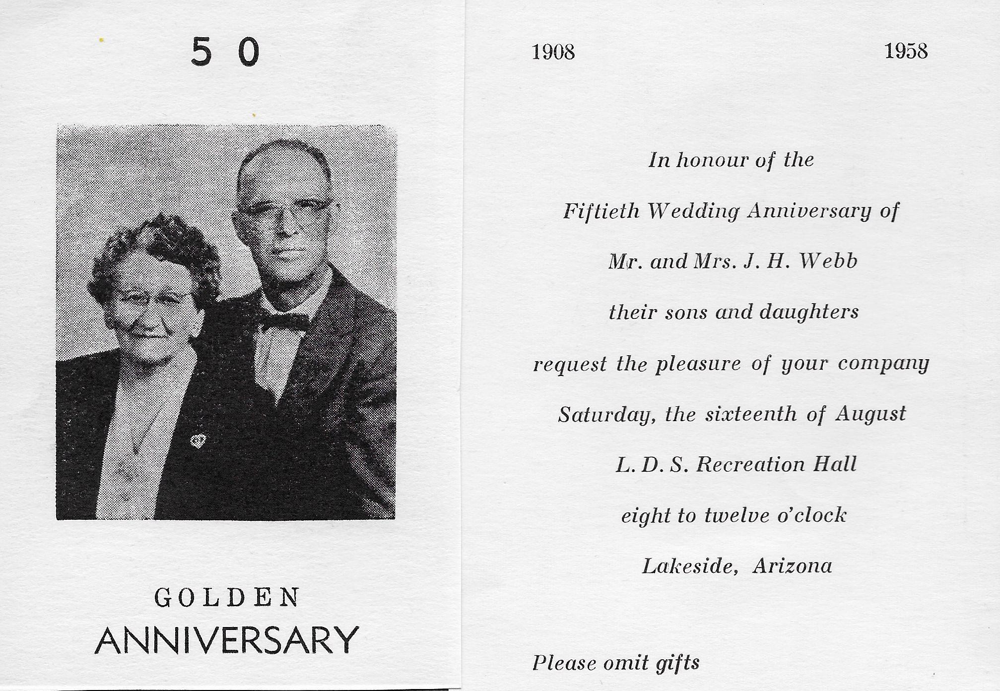

5 0 G O L D E N ANNIVERSARY 1908 1958 In honour of the Fiftieth Wedding Anniversary of Mr. and Mrs. J. H. Webb their sons and daughters request the pleasure of your company Saturday, the sixteenth of August L. D. S. Recreation Hall eight to twelve o'clock Lakeside, Arizona Please omit gifts